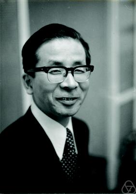

A positive matrix records a shape, not just a list of numbers. A covariance describes uncertainty; a diffusion tensor describes preferred directions of motion; a feature covariance summarizes an image region. Averaging these objects is how we pool noisy estimates, interpolate measurements, or build a representative template. Which average respects what the matrices mean?
For positive numbers, arithmetic and geometric averaging already answer different questions. For matrices, there is an additional twist: multiplication does not commute. Even the phrase geometric mean has several natural meanings. We will distinguish three objects carefully: the log-Euclidean geometric mean, the Kubo–Ando geometric mean, and the logarithmic mean. The last two words do not name the first object!
The positive cone: why matrices encode data
Write \(\mathbb S^d\) for the real symmetric \(d\times d\) matrices. Its positive semidefinite cone and positive definite interior are
\[ \begin{aligned} \mathbb S_+^d&=\{A\in\mathbb S^d:x^\top Ax\ge0\ \forall x\},\\ \mathbb S_{++}^d&=\{A\in\mathbb S^d:x^\top Ax>0\ \forall x\ne0\}. \end{aligned} \]We write \(A\succeq0\) or \(A\succ0\), respectively. The Löwner order is \(A\preceq B\) when \(B-A\succeq0\): every directional quadratic form increases. For a random vector \(X\) with finite second moment and mean \(m\),
\[ A=\mathbb E[(X-m)(X-m)^\top]\succeq0, \qquad x^\top Ax=\operatorname{Var}(x^\top X). \]Thus covariance averaging combines directional uncertainty. In diffusion MRI, positive tensors describe local anisotropic diffusion; smoothing and resampling require averages of nearby tensors [1], [2]. In computer vision, covariances of local features describe image regions, and averaged descriptors can serve as templates or update tracking models [3], [4]. Positive matrices also appear as kernel Gram matrices and, in their complex Hermitian version, quantum density matrices. Extra constraints, such as a fixed trace or diagonal, may require a separate normalization; the means below act on the whole positive cone.
The naive weighted average is perfectly legitimate:
\[ A\nabla_t B=(1-t)A+tB,\qquad 0\le t\le1. \]The PSD matrices form a convex cone, since \(x^\top(aA+bB)x\ge0\) for \(a,b\ge0\). Positive definite endpoints stay positive definite. There is no positivity problem with convex arithmetic averaging. The issue is the geometry: a multiplicative change from variance \(1\) to \(100\) has arithmetic midpoint \(50.5\), whereas the scalar geometric midpoint is \(10\).
From now on, assume \(A,B\succ0\). Logarithms and inverse-based formulas require this assumption. A singular covariance can be regularized as \(A+\delta I\), but results involving its logarithm are not assertions about \(\delta=0\).
First route: average logarithms
The spectral theorem writes \(A=U\operatorname{diag}(a_i)U^\top\), with \(U\) orthogonal and \(a_i>0\). Define
\[ \begin{aligned} \log A&=U\operatorname{diag}(\log a_i)U^\top,\\ A^t&=U\operatorname{diag}(a_i^t)U^\top. \end{aligned} \]Conversely, for any symmetric \(H=V\operatorname{diag}(h_i)V^\top\),
\[ \exp H=V\operatorname{diag}(e^{h_i})V^\top. \]These definitions are independent of choices inside repeated eigenspaces. The exponential maps \(\mathbb S^d\) bijectively onto \(\mathbb S_{++}^d\), with inverse the symmetric logarithm. We can therefore take an ordinary average in logarithmic coordinates:
\[ E_t(A,B)=\exp\!\big((1-t)\log A+t\log B\big). \]This is the log-Euclidean geometric interpolation, developed by Arsigny, Fillard, Pennec, and Ayache [1], [5]. Its midpoint is \(E_{1/2}\). In dimension one it is \(a^{1-t}b^t\). More generally, if \(A\) and \(B\) commute, they share an eigenbasis, and each eigenvalue follows precisely this scalar rule.
The name describes an actual geometry: \(d_{\mathrm{LE}}(A,B)=\|\log A-\log B\|_{\mathrm F}\), where \(\|M\|_{\mathrm F}^2=\operatorname{tr}(M^\top M)\). The path \(E_t\) is a straight line in log coordinates and minimizes the weighted squared-distance objective. For several matrices with nonnegative weights summing to one, the corresponding mean is explicitly \(\exp(\sum_i w_i\log A_i)\).
Second route: the Kubo–Ando geometric mean
Another principle is to make averaging compatible with every invertible linear change of coordinates. Covariances transform as \(A\mapsto SAS^\top\). One would like to average before or after this change with the same result.
The geometric mean associated with Kubo–Ando theory is
\[ A\#B=A^{1/2}\big(A^{-1/2}BA^{-1/2}\big)^{1/2}A^{1/2}. \]It first turns \(A\) into the identity, takes a square root in these relative coordinates, then transforms back. For commuting matrices it equals \((AB)^{1/2}\); for general matrices \(AB\) is not even symmetric, so taking an entrywise or naive product square root misses the point.
Pusz and Woronowicz introduced this operator geometric mean in 1975 [6]. Fumio Kubo and Tsuyoshi Ando subsequently placed it within an axiomatic theory of operator means, based on positivity, monotonicity, compatibility with congruences, and continuity from above [7]. Their theory applies to operators as well as finite matrices; the geometric mean is one distinguished example, not the only Kubo–Ando mean.

Proposition 1 (a square-root equation). The midpoint \(A\#B\) is the unique positive definite solution \(X\) of
\[ XA^{-1}X=B. \]Proof: whiten the equation
Set \(Y=A^{-1/2}XA^{-1/2}\) and \(C=A^{-1/2}BA^{-1/2}\). The equation becomes \(Y^2=C\). Its unique positive definite solution is the spectral root \(C^{1/2}\), giving the formula for \(A\#B\). Moreover, \(XA^{-1}X=B\) implies \(XB^{-1}X=A\), so uniqueness also proves \(A\#B=B\#A\). \(\square\)
To interpolate rather than just take a midpoint, replace the relative square root by a power:
\[ A\#_tB=A^{1/2}C^tA^{1/2},\qquad 0\le t\le1, \] \[ C=A^{-1/2}BA^{-1/2}. \]The endpoints are \(A\#_0B=A\), \(A\#_1B=B\), and \(A\#_{1/2}B=A\#B\). This is also the geodesic of the standard affine-invariant Riemannian geometry on positive definite matrices [8], [9]. For more than two matrices, its Riemannian barycenter is generally found by optimization, unlike the explicit log-Euclidean formula.
Theorem 1 (scalar-like identities, with coordinate invariance). For \(0\le t\le1\) and invertible \(S\),
\[ A\#_tB=B\#_{1-t}A, \] \[ (A\#_tB)^{-1}=A^{-1}\#_tB^{-1}, \] \[ (SAS^\top)\#_t(SBS^\top)=S(A\#_tB)S^\top. \]The operation is homogeneous and jointly monotone: increasing either endpoint in Löwner order cannot decrease the result. Both geometric interpolations satisfy the same determinant law,
\[ \det(A\#_tB)=\det E_t(A,B) =(\det A)^{1-t}(\det B)^t. \]Proof: changing the whitening basis only introduces a rotation
Put \(\widetilde A=SAS^\top\) and \(U=\widetilde A^{-1/2}SA^{1/2}\). Then \(UU^\top=I\), and the whitened second endpoint is \(UCU^\top\). Spectral powers commute with orthogonal conjugation, so transforming back gives the congruence identity.
Using congruence, the symmetry identity reduces to \(I\#_tC=C\#_{1-t}I=C^t\). Inversion follows directly because \(A^{1/2}B^{-1}A^{1/2}=C^{-1}\). Homogeneity follows by taking \(S=\sqrt c\,I\), for \(c>0\). Finally, \(\det C=\det B/\det A\), while \(\det e^H=e^{\operatorname{tr}H}\), proving the two determinant formulas.
Why joint monotonicity also holds
For \(0<t<1\), scalar integration gives \(r^t=(\sin\pi t/\pi)\int_0^\infty \lambda^{t-1}r/(r+\lambda)\,d\lambda\). Applying this identity spectrally to \(C\) yields
\[ A\#_tB=\frac{\sin\pi t}{\pi} \int_0^\infty\lambda^{t-1}(A^{-1}+\lambda B^{-1})^{-1}\,d\lambda. \]Inversion reverses positive definite order. Increasing \(A\) and \(B\) therefore decreases the sum of inverses, then increases its inverse. Integration preserves the order. The endpoint cases are immediate. \(\square\)
The log-Euclidean mean also has endpoint symmetry, homogeneity, inverse compatibility, and orthogonal equivariance. It is not generally equivariant under arbitrary invertible congruences, nor jointly monotone in Löwner order. Noncommutativity is the obstruction; the matrix exponential does not preserve arbitrary Löwner inequalities.
A useful warning follows just from determinants: whenever \(E_t(A,B)\) and \(A\#_tB\) differ, neither is above the other in Löwner order. Indeed, \(P\preceq Q\) for positive definite matrices with equal determinants forces \(P=Q\): all eigenvalues of \(P^{-1/2}QP^{-1/2}\) are at least one and their product is one.
An operator arithmetic–geometric–harmonic inequality
Theorem 2 (an order sandwich). Define the weighted harmonic mean \(A!_tB=((1-t)A^{-1}+tB^{-1})^{-1}\). Then
\[ A!_tB\preceq A\#_tB\preceq A\nabla_tB. \]For \(0<t<1\), equality of either pair of matrices holds exactly when \(A=B\). Thus Kubo–Ando geometry retains the scalar harmonic–geometric–arithmetic ordering in every direction. This statement is about \(\#_t\), not a claimed order sandwich for \(E_t\).
Proof: the scalar inequality in relative coordinates
For \(r>0\), scalar weighted AM–GM and its reciprocal give
\[ \big((1-t)+t/r\big)^{-1}\le r^t\le(1-t)+tr. \]Apply these scalar inequalities to every eigenvalue of \(C\), then multiply on the left and right by \(A^{1/2}\). The three expressions become exactly the harmonic, geometric, and arithmetic matrix means above. For interior weights, scalar equality requires every eigenvalue of \(C\) to be one, hence \(A=B\). A nonzero difference in these inequalities need not be positive definite: some generalized eigenvalues may already equal one. \(\square\)
A third object: the logarithmic mean
Now average the whole Kubo–Ando path using an ordinary matrix integral. This defines the operator logarithmic mean, denoted here by \(\mathcal L\):
\[ \mathcal L(A,B)=\int_0^1 A\#_tB\,dt. \]Theorem 3 (integrating a geometric path). With the same relative matrix \(C\),
\[ \mathcal L(A,B)=A^{1/2}\ell(C)A^{1/2}, \] \[ \ell(r)=\begin{cases}\dfrac{r-1}{\log r},&r\ne1,\\1,&r=1.\end{cases} \] \[ A\#B\preceq\mathcal L(A,B)\preceq\frac{A+B}{2}. \]Proof: integrate each relative eigenvalue
Diagonalize \(C\). For each eigenvalue \(r>0\), \(\int_0^1r^t\,dt=\ell(r)\); the value at one is its continuous limit. This proves the formula without dividing by a potentially singular matrix \(\log C\).
The scalar inequality \(r^t+r^{1-t}\ge2\sqrt r\), integrated over \([0,1]\), gives \(\sqrt r\le\ell(r)\). Integrating \(r^t\le(1-t)+tr\) gives \(\ell(r)\le(1+r)/2\). Apply spectral calculus and congruence once more. Both matrix equalities require \(A=B\). \(\square\)
The logarithmic mean is symmetric: exchanging \(A,B\) reverses \(t\) to \(1-t\) in the integral. Joint monotonicity and congruence equivariance pass through the integral as well. But it is not the log-Euclidean geometric midpoint. Already for positive numbers,
\[ E_{1/2}(1,4)=1\#4=2, \] \[ \mathcal L(1,4)=\frac3{\log4}\simeq2.164. \]This separates the names cleanly. Log-Euclidean means average the logarithms and exponentiate. Logarithmic mean means integrate the relative geometric interpolation. The latter produces one fixed matrix for the chosen endpoints; it does not move when we change the observation time \(t\).
| Mean | Construction | For \(1,4\) |
|---|---|---|
| Log-Euclidean geometric | Average logs, then exponentiate | \(2\) |
| Kubo–Ando geometric | Take a relative square root | \(2\) |
| Logarithmic | Average the whole Kubo–Ando path | \(3/\log4\) |
A genuine bridge to log-Euclidean geometry
There is nevertheless a simple limiting connection—not by averaging time, but by shrinking matrix powers toward the identity.
Proposition 2 (small-power limit). For fixed positive definite \(A,B\) and \(t\in[0,1]\),
\[ \lim_{r\to0}(A^r\#_tB^r)^{1/r}=E_t(A,B). \]Proof: near the identity, noncommuting products agree to first order
Write \(H=\log A\), \(K=\log B\). Matrix Taylor expansions give \(A^{\pm r/2}=I\pm rH/2+O(r^2)\) and \(B^r=I+rK+O(r^2)\). Hence
\[ A^{-r/2}B^rA^{-r/2}=I+r(K-H)+O(r^2), \] \[ A^r\#_tB^r=I+r\big((1-t)H+tK\big)+O(r^2). \]Taking its symmetric logarithm and dividing by \(r\ne0\) gives \((1-t)H+tK+O(r)\). Exponentiating proves the limit. All remainders are in a matrix norm for these fixed matrices; no commutation assumption was made. \(\square\)
A Gaussian transport map hidden in a geometric mean
Here is a useful connection to Bures geometry and Gaussian optimal transport. The optimal quadratic-cost transport from \(\mathcal N(0,A)\) to \(\mathcal N(0,B)\) is \(x\mapsto Tx\), where
\[ \begin{aligned} T&=A^{-1}\#B\\ &=A^{-1/2}(A^{1/2}BA^{1/2})^{1/2}A^{-1/2},\\ T^{-1}&=A\#B^{-1}. \end{aligned} \]Proof: the covariance transport equation is the same square-root equation
A symmetric positive definite transport matrix must satisfy \(TAT=B\). Proposition 1, with first argument \(A^{-1}\), identifies its unique solution as \(A^{-1}\#B\). To verify optimality directly, for every \(x,y\),
\[ 2x^\top y\le x^\top Tx+y^\top T^{-1}y. \]The difference is \(|T^{1/2}x-T^{-1/2}y|^2\). In a coupling with these Gaussian marginals, the expectation of the right-hand side is fixed. Equality is attained by \(Y=TX\), which has covariance \(B\); this maximizes \(\mathbb E[X^\top Y]\), hence minimizes \(\mathbb E|X-Y|^2\). Inverse compatibility of \(\#\) gives the formula for \(T^{-1}\). \(\square\)
Notice the roles: \(A^{-1}\#B\) is a map, whereas \(A\#B\) is an averaged covariance. The Bures covariance path \(((1-t)I+tT)A((1-t)I+tT)\) is yet another interpolation. Even for scalar variances \(a,b\), it is \(((1-t)\sqrt a+t\sqrt b)^2\), not \(a^{1-t}b^t\). Geometry chooses the average.
Numerical experimentation
Compare log-Euclidean and Kubo–Ando interpolation between two covariance ellipses. Both panels share endpoints, time, axes, and scale; blue to red is linear in \(t\). The rotation slider turns the red covariance relative to the fixed blue axes. The anisotropy slider changes their common major-to-minor radius ratio while preserving each endpoint’s area; ratio one gives circles. Relative overall size is set by the preset, and the time slider remains independent. With common axes, the two geometric paths agree—but the logarithmic mean remains a different object.
Enable the teal logarithmic-mean overlay to see \(\mathcal L(A,B)\), the fixed time-average of the Kubo–Ando path. The scalar preset uses \(A=I,B=4I\): at \(t=1/2\), both geometric paths give \(2I\), while the overlay is \((3/\log4)I\). Covariance eigenvalues are squared radii, so the ellipse radii are their square roots.
The figures evaluate the spectral formulas, not fitted approximations. Every control keeps both endpoints strictly positive definite. The two moving matrices have the same determinant \((\det A)^{1-t}(\det B)^t\); the logarithmic time-average generally does not. Equal determinant fixes ellipse area, not orientation or anisotropy.
Bibliography
- Vincent Arsigny, Pierre Fillard, Xavier Pennec, and Nicholas Ayache. Log-Euclidean Metrics for Fast and Simple Calculus on Diffusion Tensors. Magnetic Resonance in Medicine 56(2), 411–421, 2006. Paper.
- Xavier Pennec, Pierre Fillard, and Nicholas Ayache. A Riemannian Framework for Tensor Computing. International Journal of Computer Vision 66, 41–66, 2006. Paper.
- Oncel Tuzel, Fatih Porikli, and Peter Meer. Region Covariance: A Fast Descriptor for Detection and Classification. ECCV 2006, 589–600. Paper.
- Fatih Porikli and Oncel Tuzel. Covariance Tracker. MERL Technical Report TR2006-042, 2006. Report.
- Vincent Arsigny, Pierre Fillard, Xavier Pennec, and Nicholas Ayache. Geometric Means in a Novel Vector Space Structure on Symmetric Positive-Definite Matrices. SIAM Journal on Matrix Analysis and Applications 29(1), 328–347, 2007. Paper.
- Wiesław Pusz and Stanisław L. Woronowicz. Functional calculus for sesquilinear forms and the purification map. Reports on Mathematical Physics 8(2), 159–170, 1975. Paper.
- Fumio Kubo and Tsuyoshi Ando. Means of positive linear operators. Mathematische Annalen 246, 205–224, 1980. Paper.
- Maher Moakher. A Differential Geometric Approach to the Geometric Mean of Symmetric Positive-Definite Matrices. SIAM Journal on Matrix Analysis and Applications 26(3), 735–747, 2005. Paper.
- Rajendra Bhatia and John Holbrook. Riemannian geometry and matrix geometric means. Linear Algebra and its Applications 413, 594–618, 2006. Paper.